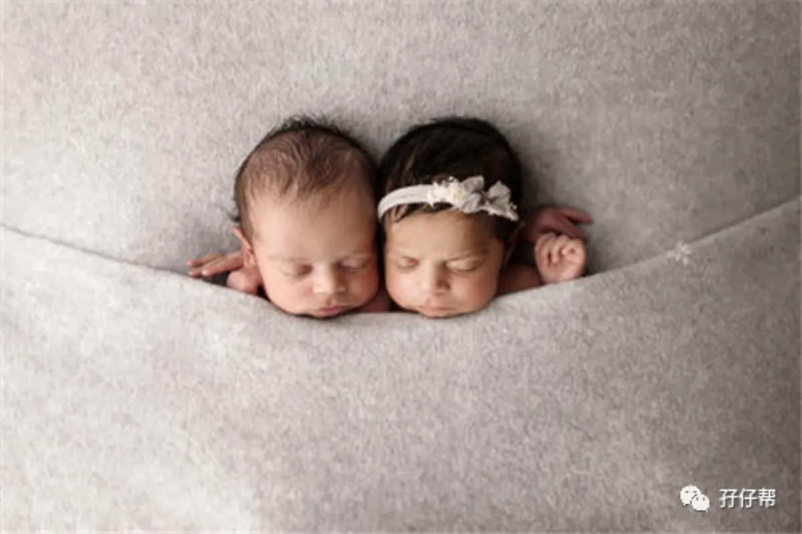
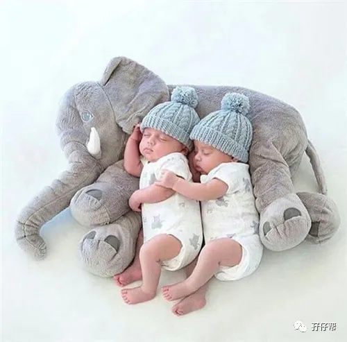
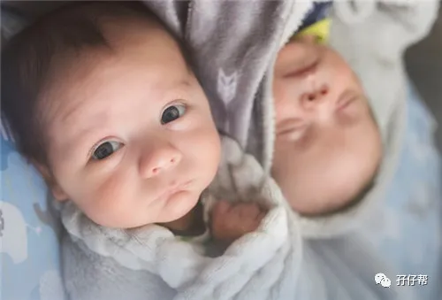

文|圆圈妈，一个文思如尿崩的双胎妈妈
图|来自网络，如有侵权，请联系删除
· 正 · 文 · 来 · 啦 ·
迄今为止，
我觉得我干过最龌龊的事情就是，
突然有一天，
圆圈能持续睡5小时了，
我竟然失眠了，
然后，每隔1个小时，
我就会一个激灵爬起来，
探下他们的鼻息，
靠近他们的胸口，
摸摸他们的额头，手脚….
心里想着，
坏了，怎么能睡那么久，不会是…
没气了吧！？
（因新生儿期曾出现过呼吸暂停，口唇发紫的情况）
今天的推文主题：
浅谈5月龄的双胞胎睡眠特点
以下文字节选自《双胞胎睡眠圣经》
第二部分第五章
不同年龄段儿童对睡眠的不同需求
预产期过后的4~6个月
在这一阶段,你的双胞胎宝宝们的每日睡眠总需求时间依然稳定地保持在14个小时,但不同点在于,此时,他们往往可以睡整觉了。
但是,即便总体看来一切照旧,但其实还是有一个显著的变化值得父母注意,那就是在这一阶段内,宝宝们白天睡觉的时间会大大增加。
在此之前,他们一天中会小睡两三次甚至更多次,但现在,他们通常只会小睡两次,可每次都会持续一两个小时,而且是非常给力的深度睡眠!有些双胞胎可能是晨间小睡那一觉时间较长,另一些则是午睡时间更长。
许多家长在这期间会纠结于到底还要不要在半夜给宝宝们喂奶。对此,答案并不是唯一的。
虽然理论上宝宝们已经可以睡整觉了,也就是说不需要再喂奶了,但实际上,许多父母还是觉得他们必须给宝宝们半夜喝上一次甚至两次奶。
造成这种情况的原因主要有两个:
一是因为父母之前并没有很好地对孩子们进行睡眠训练,宝宝们在半夜哭醒,逼迫父母用喂奶来安抚。
二是因为父母心里总是觉得宝宝们还小,需要不分昼夜地多吃奶。
而实际情况是,处于这一年龄段里的宝宝们,体内的生物钟让他们在夜间睡眠时反复地在深度睡眠和浅度睡眠之间交替。
有的时候,在他们处于浅度睡眠时,他们身体的一部分可能会清醒过来,这时他们可能会哭,但这并不代表他们真的醒来了,往往片刻过后,他们就又重新进入深度睡眠了。
如果家长们一听到他们的哭声就立刻冲进房间,反而有可能将他们彻底唤醒。当宝宝们更加懂事以后,他们甚至会以为父母冲进房间是要和他们玩耍,从而彻底中断睡眠,并打乱整个睡眠和作息规律。
宝宝们的哭声很可怜,他们醒来以后拉着你玩耍时的笑脸很可爱,但这些都不重要,唯一重要的事情只有一件,就是他们是否可以拥有健康的睡眠。
如果夜间喂奶这种行为成为常态,宝宝们的睡眠就不可能健康。有些父母认为这没什么大不了的,第二天多睡一会儿补回来就好了,我就是不能让我的孩子饿着。
科学表明,第二天多睡的那一会儿根本无法弥补夜间长睡眠所损失掉的那部分,换句话说,白天的睡眠和晚上的睡眠截然不同,哪怕宝宝们可以从时间上一比一地补回来,但在睡眠效果上也毫无用处。
个人拙见
5月龄的圆圈兄弟，睡觉能力有所好转，注意，只是有点起色而已！
有时，白天的小睡可以持续一两小时，甚至更久…
曾经破纪录，连续3个晚上，从凌晨12点睡到早晨5点钟，期间偶有哼哼唧唧，但稍微安抚下，如拍拍屁股，肩膀，不需要抱起，又能继续入睡…
但大多数情况下，如无意外，他们几乎都会一前一后在凌晨一两点醒来，原因大概有尿醒，热醒，渴醒…或者其他未解之谜…
婆婆每次听到他们夜半哭醒，就说肯定是饿了，要冲奶粉给他们喝…
可是，就在我们手忙脚乱烧开水，调水温，冲奶粉的间隙，娃不哭了，又睡了！白忙活一场！
有时候，他们似醒非醒，似睡非睡，闭着眼睛吧唧吧唧地喝奶，没喝几口又睡了，剩下一大瓶奶，倒掉可惜，把他们摇醒了喝，又觉得太残忍！
有时候吃着睡着了，把奶嘴拔出来，又醒了，大哭…把奶嘴塞回去，又不哭了！
麻@#$%蛋，真想把玻璃奶瓶摔个粉碎，爱吃不吃！爱睡不睡！
看到马克在这一章节的观点，我突然很庆幸自己当初的策略。
我们不要坐以待毙！
我们要揭！竿！而！起！
我和队友一致决定，要想在混战中幸存下来，必须好好整治这两只四角吞金兽。
首先把圆圈抱到同一屋里，同一床上一起睡，目的是避免婆婆过多干涉。
接着发毒誓，狠心一把，谁都不能破坏规矩。
当圆圈半夜哭醒，排除大问题后，不过分关注，只是暗中观察。
真的是暗中观察！
不开灯，不说话，只是借着月色，屏住呼吸，静静地看着他们在蠕动，翻身，滚动…
不去抱，不去哄，也不去拍这拍那...
反正千万别！碰！他们！
我们测试了5个晚上，有3个晚上，他们这样哭，不用理会的情况下，基本上磨叽磨叽一阵子，就能继续睡下！
有1个晚上，是因为婆婆突然冲进我们的房间问要不要冲奶粉，彻底把他们吵醒，失败了！
有1个晚上，是因为尿不湿太差劲了，漏尿了，床单都湿了，不得不给他们重新换！
有意思的是，他们闹觉很讲良心，好像担心我们搞不定似的，每次他们半夜醒来都不同步，即便这个娃怎么哭，另一个娃基本上不会被吵醒！
例如，今晚上圆圆负责睡觉，圈圈负责闹觉，明晚上哥俩再互换角色。
这就给我和队友争取了一个允许我们其中一人不用拼凑式睡觉的机会。
因为倘若两个娃一起哭，迫不得已需要安抚时，赤手空拳抱起两只一起哄，对那时候只有点养娃“三脚猫功夫”的我们来说，太高难度了，因此必定要两人一起上阵，方能扭转乾坤！
Good boys!两位小暖男！
不过，要是两人都能睡整觉，那就更加“阿弥陀佛”了！
顺便说一个注意事项，这也是群里经常有妈妈提到的：半夜给娃喝奶时，总是吃着吃着睡着了，怎么破？
5月大的宝宝，除非是超早产儿，建议可以考虑断夜奶了！并不是说马上断掉，而是循序渐进，做好准备工作。
当宝宝半夜哭醒，别急着喂奶，先观察究竟是不是真的饿了，毕竟，宝宝哭的理由方方面面，甚至毫无理由…
而你安抚的方式有很多，不仅仅只有喂奶这一条吃力不讨好的路子。
如果确保宝宝一天的奶量在正常范围，可以考虑不给奶喝，如果实在想做点什么，那就只是喂点水即可！
如果你家有使用安抚奶嘴的习惯，可以用安抚奶嘴测试下是真饿还是假饿，要是塞了安抚奶嘴能不哭且能继续入睡，那基本上是不饿，只是宝宝偶尔的“空虚寂寞冷“而已。
刚前面提到，圆圈也有这种吃着睡的问题，好像是自从换了中流速的奶嘴之后，他们就更加肆无忌惮了！吃睡两不误！
我们采取的方式比较简单粗暴。
反正他们怎么哭都不喂奶，实在哭得厉害，就只喂水，刚开始死活不肯喝水，之后慢慢接受…
最后，不需要喝水，不需要抱起安抚，不需要哼曲儿…夜奶彻底断掉了，半夜闹觉的次数也在慢慢减少。
感谢，这个调整拯救了我全家！
-END-
一好文推荐一
一加入社群一
一关注孖仔帮一
点击“阅读原文”，直达双胞胎育儿网站www.sgguy.com.
喜欢这个睡眠圣经吗？，请点“在看”


